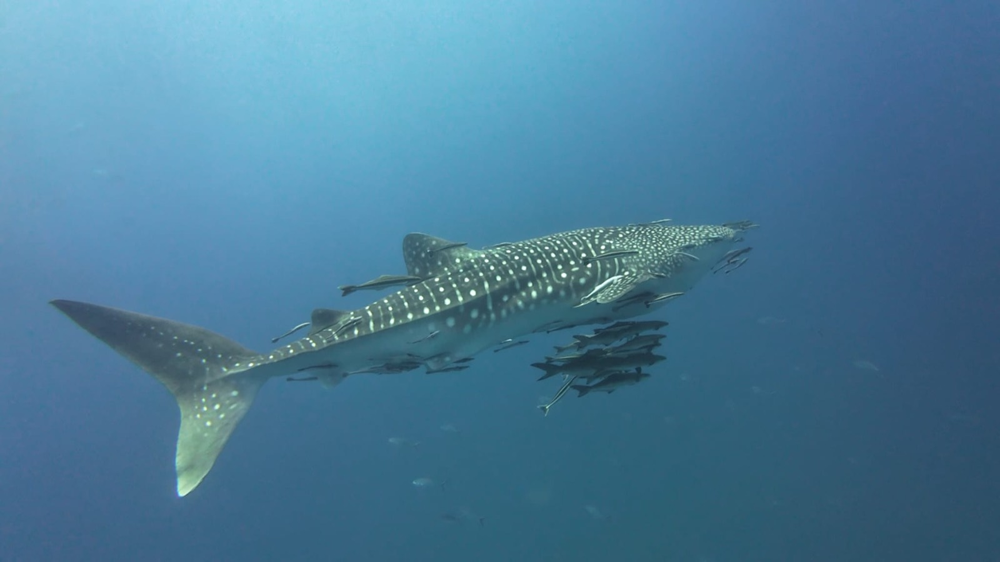
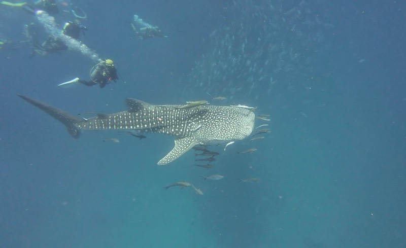
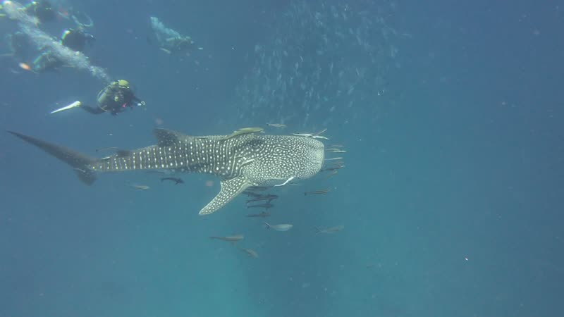
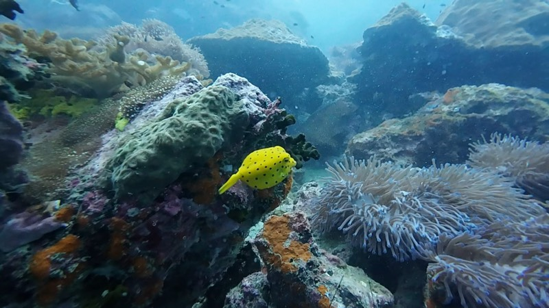
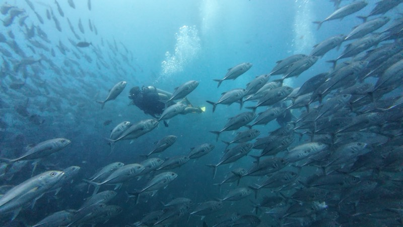
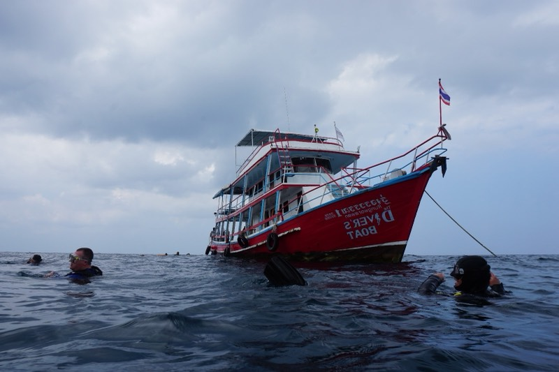
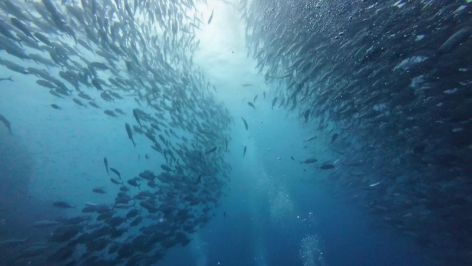
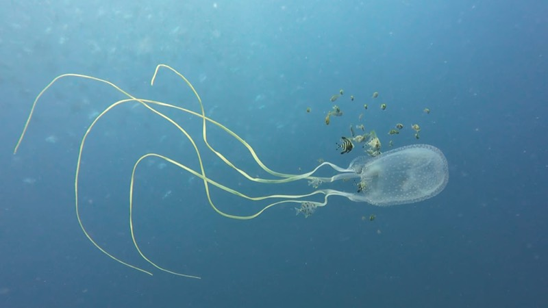

Kein Tauchschein nötig

Try Dive
Zum ersten Mal unter Wasser. Ein ganzer Tag, maximal zwei Schüler pro Instructor, an Koh Ma oder Sail Rock.
Pro Person4,200฿
Details
Hier untenist alles anders
Unser eigenes Boot fährt um 9:30 von Chaloklum nach Sail Rock — zum besten Tauchplatz im Golf von Thailand. Try Dives, Fun Dives und SSI-Kurse ab Open Water, in kleinen Gruppen mit geduldigen Instructors, und mit etwas Glück ein Walhai.
Scrollen zum Abtauchen
Zum ersten Mal unter Wasser. Ein ganzer Tag, maximal zwei Schüler pro Instructor, an Koh Ma oder Sail Rock.
Pro Person4,200฿
Details
In drei Tagen brevetiert und weltweit bis 18 m. Maximal vier Schüler, Tauchgänge an Sail Rock.
3 Tage · SSI12,900฿
Details
Gruppen von maximal vier Tauchern. Sail Rock, Koh Ma, Little Sail Rock und die Oil Platform.
Pro Ausfahrt3,200฿
DetailsDie meisten Boote fahren mit über 30 Tauchern raus. Bei uns sind es höchstens 20, und Einführungstauchgänge laufen mit zwei Schülern pro Instructor. Weniger Leute heißt echte Betreuung unter Wasser, Ausrüstung ohne Hektik aufbauen und Platz an Deck zwischen den Tauchgängen.
Wir legen um 9:30 ab und sind damit an Sail Rock und Koh Ma, wenn andere Boote schon auf dem Heimweg sind. Leerere Tauchplätze, bessere Sicht.
Wir haben im Januar 2024 eröffnet, mit einer klaren Vorstellung davon, wie sich ein Tauchtag anfühlen soll: sicher, entspannt und richtig schön. Unsere SSI-Instructors haben mehr als zehn Jahre Erfahrung als Tauchguides in Ägypten, auf den Philippinen, in Indonesien und Thailand — und dieser Standard ist jetzt in Chaloklum zu Hause, an Bord unseres eigenen Boots.
Neben Sail Rock tauchen wir an Koh Ma, Little Sail Rock und der Oil Platform. Wenn die Bedingungen es erlauben, schaffen brevetierte Taucher mehrere Plätze an einem Tag — mehr Meeresleben, weniger Fahrzeit.
Unsere gesamte Ausrüstung ist von 2024 und wird jeden Tag geprüft. Atemregler, Jackets und Neoprenanzüge von XS bis XXL, mit offizieller SSI-Wartung vom ersten Tag an.
Das sagen unsere Taucher
5* dive centre for a reason! Our guide / instructor, Boris, was truly fantastic! High energy, funny, patient and such a great character, whilst being completely professional at all times, felt like we were in super safe hands.
The dive itself - wow - Sail Rock is a must do! These dives were like nothing we’d seen before, thousands and thousands of fish, huge schools, and great variety. My particular favourite was the huge schools of barracuda. I sent videos to friends and they thought it was AI 😂😂
We will remember this day for the rest of our lives, and so happy we picked TDB. Don’t think twice, just book.
I came to Boris with a real fear of the water but a dream to dive - and he was the perfect choice. 🙏🏼
He explained everything with patience, professionalism, and in such a friendly, easygoing way.
On my first time in the water, I was extremely scared and overwhelmed, but he stayed calm, patient, and supportive the entire time. He gave me the space I needed to adjust, and step by step, we managed to dive together - and in the end of that day, I was even able to dive on my own 🥹
Underwater, he paid attention to every little detail, constantly checked that I was okay, and made me feel completely safe even at depth.
I highly recommend! I enjoyed every single moment. 🤩
We had a great experience diving with this school over two different days. The staff is professional, friendly, and safety-focused. The briefings were clear, the equipment was in excellent condition, and everything was very well organized and on time.
We dove at Sail Rock both days, and everything went perfectly. Special thanks to our instructor for filming our dives, we really appreciate having those amazing memories. Highly recommended!
I did my open water diver at the divers boat and I can honestly say everything was perfect. Boris, the owner of the diving school, has a very very good way of introducing newcomers to diving. He was explaining everything very calmly and well structured. His way to teach built up my confidence, so I felt very comfortable when we went for my first 4 open water dives. In general he is a very easy going and funny person. I would definitely come here again to do more diving with him. Also the diving instructor Parth did a very good job at teaching me the confined water exercises and the handling of the diving equipment :)
Had an amazing dive yesterday! Absolutely incredible views at Sail Rock! Boris was a really energetic instructor. Very professional with a mix of fun! Would highly recommend if you're feeling unsure he is the guy you need! He also captured some incredible videos of the dive! 10/10
Had a great diving experience. Our first dive was 40 minutes and involved a few learning curves because some of us hadn’t dived for a while and none of us had dived from a boat. Between dives we had a Thai curry lunch and our instructor August was stern but kind in helping us improve on safety and breathing, resulting in the next dive lasting 50 minutes! He wanted to help us and I am a better diver now because of him.
My experience with the Open Water course was incredible. The instructor is an absolute pro. He has such a clear and friendly way of explaining things that the course felt very enjoyable.
On the first day, he sat down with me and explained everything I needed to know before diving, with great patience and attention to detail. During my first dive, he was always very attentive, making me feel safe and teaching everything calmly and professionally.
During the second, third, fourth, and fifth dives, he made me feel so comfortable and confident that I was able to fully enjoy the fish and marine life.
I recommend this dive center and the instructor Boris a 100%!
Had a very good time fun diving with instructor David and deep diving course with Sebastian with the guidance of instructor Boris!
Friendly and professional crew, nice boat equipped with everything you need - toilet, delicious food, all equipment and more...
Highly recommended 🙏☝️💪👌
Great crew and team! Went on a 2 dives program with them and I couldn’t be happier! I’m not a very experienced diver and it was important for me to have a good dive master or instructor. It was perfect. We were 3 divers plus the dive master. The dives went very smooth and very well guided. We didn’t manage to see the whale shark but we saw a ton of other fish.
Ein Tag auf der Rungworawan
Komm in unserem Laden in Chaloklum vorbei und füll die Anmeldeformulare aus. Keine Anprobe nötig — die komplette Ausrüstung ist in deiner Größe auf dem Boot.
Treffpunkt am Boot am Pier von Chaloklum um 9:15. Wir legen um 9:30 ab, wählen die Route nach Gezeiten und Bedingungen und geben dir auf der Fahrt ein gründliches Briefing.
Gemeinsam an der Leine nach unten. Anfänger bleiben flach und entspannt, brevetierte Taucher gehen tiefer.
Ein warmes Mittagessen mit Reis, reichlich Obst, warme und kalte Getränke, Schatten und ein Bad im Meer. Genug Zeit, um richtig zu entsättigen und über das Gesehene zu reden.
Ein anderer Tauchplatz oder ein anderes Profil — Fotografie, tiefer oder ein ruhiger Drift auf der Suche nach Schildkröten.
Ausrüstung spülen, Tauchgang ins Logbuch eintragen, und wenn du eine Kamera gemietet oder ein Video gebucht hast, gehört es dir, bevor du trocken bist.
Erlebnisse
Tägliche Ausfahrten nach Sail Rock für brevetierte Taucher und absolute Anfänger. Jeder Preis unten enthält deinen SSI-Instructor oder Guide, die komplette Ausrüstung, ein warmes Mittagessen, Obst und Getränke an Bord. Der Verleih einer Unterwasserkamera kostet 600฿, oder dein Instructor filmt deinen Tauchgang für 800฿.

1 Tag · Brevetierte Taucher
Maximal vier Taucher pro Guide. Sail Rock, Koh Ma, Little Sail Rock oder die Oil Platform.
3,200฿
Mehr
1 Tag · Ohne Tauchschein
Dein erster Atemzug unter Wasser, zwei Schüler pro Instructor, in ruhigem Wasser an Koh Ma.
4,200฿
Mehr
1 Tag · Ohne Tauchschein
Ein Schritt weiter als der Try Dive: mehr Übungen, mehr Grundzeit und ein echter Vorgeschmack aufs Tauchen.
4,900฿
Mehr
1 Tag · An der Oberfläche
Komm mit für die Fahrt und die Aussicht. Ideal für Familien, Nichttaucher und nervöse Anfänger.
1,500฿
MehrSSI-Kurse
Internationale SSI-Ausbildung in kleinen Gruppen — maximal vier Schüler pro Instructor, unser eigenes Boot und sofortige digitale Brevetierung, sobald du bestanden hast. Vom allerersten Atemzug bis zum Divemaster.

Open-Water-Tauchgänge
an Sail Rock
Hier anfangen · 3 Tage
Der Tauchschein, der überall gilt. In drei Tagen kommst du vom flachen Wasser an Koh Ma zum Brevet und tauchst selbstständig bis 18 Meter, überall auf der Welt. Ab 10 Jahren. Seit 2024 haben über 400 Taucher bei uns ihren Schein gemacht.
Aufbauend auf dem Open Water: tiefere Tauchplätze, bessere Tarierung, neue Fähigkeiten.
2 Tage
12,500฿
DetailsUnsere Empfehlung nach dem Open Water: Deep + Nitrox, die zwei Spezialkurse, die dein Tauchen wirklich erweitern.
2 Tage
13,500฿
DetailsTauchgänge bis 40 m planen und durchführen — die ganze Höhe von Sail Rock.
2 Tage
8,500฿
DetailsDer Kurs, der verändert, wie du mit anderen tauchst.
2 Tage
11,600฿
DetailsLängere Grundzeit, kürzere Oberflächenpausen. An einem Tag erledigt.
1 Tag
4,500฿
DetailsWerde Profi: ein Monat unbegrenztes Tauchen, betreut von unserem leitenden Instructor.
1 Monat
36,000฿
DetailsTauchplätze
Sail Rock ist das Highlight, und das zu Recht. Aber der Grund, von Chaloklum aus zu tauchen, ist alles andere, was von hier aus erreichbar ist.
Bewege deine Lampe über einen Tauchplatz, um die Farben zurückzuholen

Alle Stufen
5–40Meter
Die berühmte Felsspitze im offenen Meer mit dem senkrechten Tunnel hindurch — The Chimney. Eine Stunde mit dem Boot. Der beste Tauchplatz im Golf von Thailand, ein Muss.

Anfänger & Kurse
5–18Meter
Zehn Minuten von Chaloklum, keine Strömung und ein wirklich gesunder Hartkorallengarten. Hier passiert dein erster perfekter Tauchgang.

Mittelstufe
8–20Meter
Ein Mini-Sail-Rock zehn Minuten östlich von Chaloklum. Viel weniger Taucher, genauso viel Leben. Das versteckte Juwel, um den Massen zu entkommen.

Fortgeschritten · 20+ Tauchgänge
10–30Meter
Eine künstliche Struktur allein im offenen Wasser, in der riesige Schwärme Schutz suchen. Der außergewöhnlichste Tauchgang im Golf, mit dem meisten Adrenalin.
Du planst deine Reise? Alles über die beste Tauchzeit auf Koh Phangan, Monat für Monat in unserem Blog, oder stöbere in all unseren Tauchratgebern.

Rungworawan
Chaloklum, Koh Phangan
Unser eigenes Boot
Geräumig, stabil und voll ausgestattet. Sie bringt uns jeden Tag nach Sail Rock, und nur weil wir ein eigenes Boot haben, können wir kleine Gruppen anbieten, um 9:30 ablegen und den Plan ändern, wenn die Gezeiten es verlangen.
Jeder Atemregler, jedes Jacket und jeder Neoprenanzug wird täglich geprüft und nach offiziellem SSI-Plan gewartet. Bring einfach Badesachen mit, den Rest haben wir in deiner Größe.
Das Phangan-Team
Unsere Instructors unterrichten auf Englisch, Spanisch und Französisch, und einen Großteil der Saison sind auch Italienisch und Deutsch an Bord. Zusammen haben wir über zehn Jahre Taucherfahrung in Ägypten, auf den Philippinen, in Kambodscha, Vietnam, Indonesien und Thailand — was vor allem heißt, dass wir Strömungen und Meeresleben gut Menschen erklären können, die noch nie eine Maske getragen haben.

Managerin · Büro & Buchungen
Rui ist das Herz des Ladens. Sie führt das Büro und alle Buchungen, sorgt dafür, dass der Tag nach Plan läuft, und empfängt dich so, wie du es verdienst — auf Englisch oder Chinesisch.

Manager · leitender Instructor · SSI #112758
Tauchprofi seit 2015 und SSI-Instructor seit 2022, mit mehr als 5.000 Tauchgängen. Boris leitet die Instructors und Divemaster, damit jede Ausfahrt sicher ist, Spaß macht und zu deinem Niveau passt.

Unser Schiff
Geräumig, stabil und voll ausgestattet. Sie fährt jeden Tag nach Sail Rock. Komm bei der nächsten Ausfahrt mit und werde Teil ihrer Geschichte.
Fotogalerie
Schildkröten, Walhaie und Lächeln unter Wasser — alles auf unseren eigenen Ausfahrten ab Chaloklum fotografiert. Keine Stockfotos.






Schreib uns
Schreib uns auf WhatsApp und dir antwortet ein echter Mensch, meist innerhalb einer Stunde. Sag uns dein Niveau und deine Reisedaten — oder dass du keine Ahnung hast, wo du anfangen sollst; auch das ist eine völlig gute Nachricht.
Mit dem Try Dive. Ein ganzer Tag, zwei Schüler pro Instructor und kein Tauchschein nötig — du atmest zum ersten Mal unter Wasser, im ruhigen, strömungsfreien Wasser an Koh Ma. Wenn es dir gefällt, machen der Basic Diver und der Open-Water-Kurs genau da weiter, wo du aufgehört hast.
8 Jahre für den Try Dive und 10 für den Basic Diver und den SSI-Open-Water-Kurs. Kinder, die zum Tauchen noch zu jung sind, können vom selben Boot aus an Sail Rock schnorcheln.
Ja, und viele tun das. Nichttaucher können mit aufs Boot kommen und für 1.500฿ an Sail Rock schnorcheln, während der Rest der Gruppe taucht. Schreib uns auf WhatsApp das Alter und die Erfahrung deiner Gruppe, und wir stellen einen Plan zusammen, mit dem alle auf demselben Boot glücklich sind.
Ehrlich gesagt: vielleicht — und genau das gehört zum Zauber. Sail Rock ist einer der besten Orte im Golf von Thailand, um ihnen zu begegnen. Die klassische Saison ist April bis Juni, aber wir hatten auch im Februar und September tolle Begegnungen: Es sind wilde Tiere mit ihrem eigenen Zeitplan. Was du zuverlässig siehst, sind große Schwärme von Barrakudas, Fledermausfischen und Stachelmakrelen rund um die Felsspitze.
Wir tauchen das ganze Jahr, und das Wasser bleibt bei 28–30 °C. Am klarsten ist Sail Rock etwa von Mai bis Oktober, oft mit 20–30 m Sicht. Von Januar bis April trägt das Wasser mehr Plankton, die Sicht dort liegt eher bei 5–10 m — aber genau dieses Plankton ernährt die riesigen Schwärme und lockt die Walhaie an, und in dieser Zeit sind Koh Ma und Little Sail Rock am klarsten. Die einzige echte Pause ist der Monsun, ungefähr November bis Mitte Dezember, wenn wir an Tagen schließen, an denen die Boote nicht sicher rausfahren können.
Der Laden liegt im Dorf Chaloklum an der Nordküste von Koh Phangan, und das Boot fährt vom Pier in Chaloklum ab. Wir bieten keinen Hotel-Abholservice an: Taxis auf der Insel sind teuer, und einen Roller für den Tag zu mieten (etwa 250฿) ist günstiger und einfacher. Öffne die Karte oben für die Wegbeschreibung.
Schreib uns auf WhatsApp deine Daten und dein Niveau. Eine Anzahlung sichert deinen Platz, bezahlen kannst du bar oder per Revolut. Komm am Vortag im Laden vorbei, um die Anmeldeformulare auszufüllen, und triff uns dann um 9:15 am Boot am Pier in Chaloklum. Wenn wir das Boot wegen des Wetters absagen, bekommst du dein Geld vollständig zurück.
Badesachen, ein Handtuch und Sonnenschutz. Die komplette Tauchausrüstung ist inklusive — Atemregler, Jackets und Neoprenanzüge von XS bis XXL, alles neu von 2024 und täglich geprüft. Ein warmes Mittagessen mit Reis zwischen den Tauchgängen, reichlich Obst sowie warme und kalte Getränke sind ebenfalls inklusive. Du willst ein Video? Miete eine Unterwasserkamera für 600฿, oder dein Instructor filmt deinen Tauchgang für 800฿.
Unsere Instructors unterrichten auf Englisch, Spanisch und Französisch. Einen Großteil der Saison haben wir auch einen Instructor, der Italienisch und Deutsch spricht, und an manchen Terminen Russisch — frag bei der Buchung nach. Rui, die das Büro führt, spricht Englisch und Chinesisch.